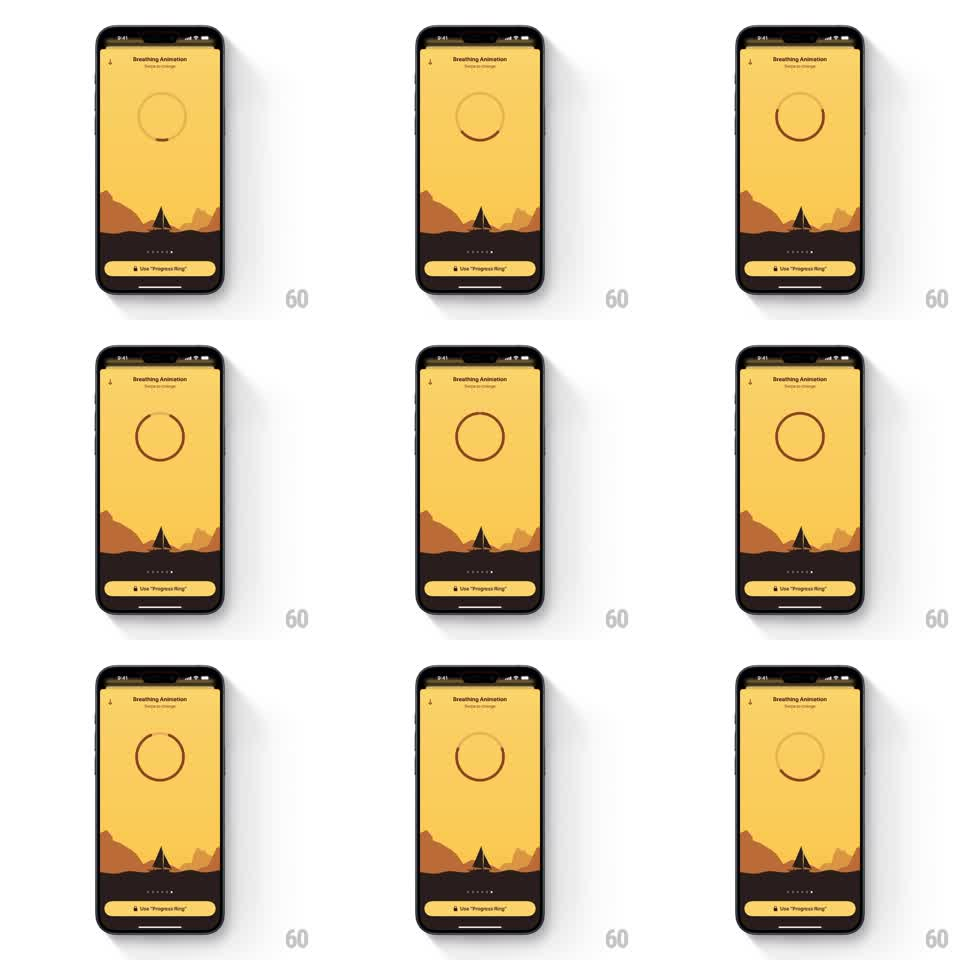

Media
Frame-by-frame

Rebuild this animation 1:1: Unwind's progress ring breathing guide - over the desert scene, a thin outlined ring expands and contracts to pace breathing, a dark arc sweeping its circumference to show progress.

Rebuild this animation 1:1: Unwind's progress ring breathing guide - over the desert scene, a thin outlined ring expands and contracts to pace breathing, a dark arc sweeping its circumference to show progress. ## Integration Integration: stack-agnostic spec - springs given as stiffness/damping, timed motions as duration + curve; map every value to your framework and animation library of choice. ## Scene Unwind's "Breathing Animation" screen: the warm yellow sky, dark dunes, and tent silhouette, page dots and a "Use 'Progress Ring'" button at the bottom. In the sky floats a thin ring - a light circle outline with a darker arc filling part of its stroke, like a progress indicator. The whole ring grows and shrinks with the breath while the arc tracks position. ## Motion spec Pattern: progress ring breathing loop, ~8s per breath. - Inhale (~4s): the ring expands (radius scale 0.6 to 1.25, ease-in-out) while the dark arc sweeps clockwise along the stroke, proportional to breath progress. - Hold (~1s): the ring rests at full size, arc paused. - Exhale (~4s): the ring contracts back as the arc continues its sweep or reverses, ending where the next inhale begins. - Stroke width stays constant as the ring scales - the ring resizes, it does not grow thicker. - The desert scene and chrome stay frozen; the ring is the only moving element. ## Calibration - The ring is delicate - a hairline stroke, not a chunky gauge. - The arc's sweep is smooth and linear within each breath phase. ## Reduced motion The ring crossfades between small and large states; the arc fades in place. ## Don't miss - Two elements at once: the ring's scale breathes, the arc measures - they are independent motions on one shape. - The ring reads as a line drawing that suits the flat illustration style.